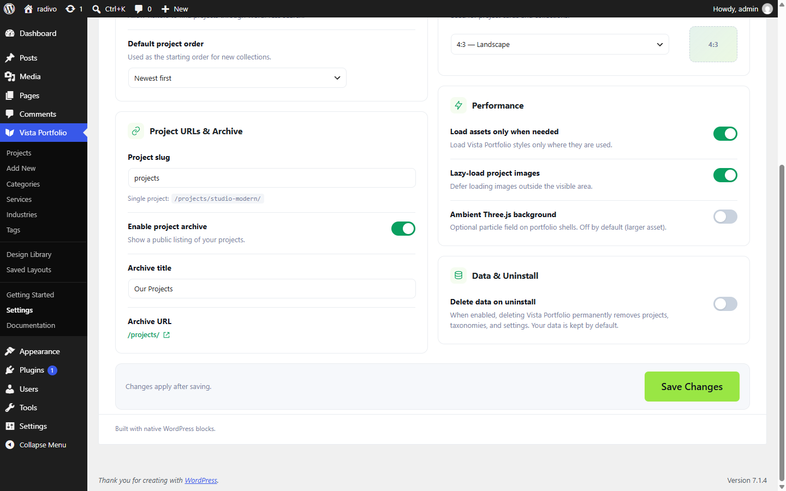

Project URLs & Archive
Control the public URL base and archive for projects.

| Setting | What it does |
|---|---|
| Project URL base | Slug segment for singles (default projects). Example: /projects/my-case-study/. |
| Enable project archive | Turns the projects archive on or off. |
| Archive title | Title shown for the archive when enabled. |
After changing the URL base, flush permalinks under Settings → Permalinks → Save.